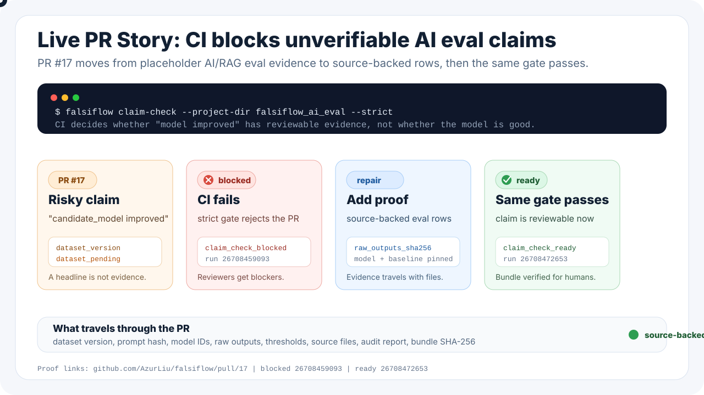

AI eval improved
A PR tries to ship an eval claim before the dataset, raw outputs, baseline, and metadata are reviewable.
Open PR #17CI gates for claims before they ship. See a real AI eval PR fail on placeholder evidence, then pass after the evidence is source-backed.
A PR tries to ship an eval claim before the dataset, raw outputs, baseline, and metadata are reviewable.
Open PR #17Strict CI refuses placeholder evidence and keeps the claim out of release notes.
Blocked runThe same PR passes after source-backed eval rows, pinned versions, raw artifacts, and a review bundle are added.
Ready run
Missing source files, placeholder values, or unpinned benchmark metadata stop the claim before it reaches release notes.
Measured rows, required metadata, source manifests, audit reports, and bundle verification agree.
Blocks public comparison until dataset, model, raw-output, and reproducibility evidence are pinned.
Blocks launch until metric definition, exposure, guardrails, rollback owner, and dashboard evidence are present.
Blocks advancement until measured evidence, raw source files, thresholds, and review artifacts line up.
Keeps contact claims, scope confirmation, and measured-data return requirements separate.
Upload project, evidence, and source files, then run the local evidence gate from this browser.
Open workbenchA readable pass/fail report that shows the decision, the evidence, and what to check next.
Open reportAnswer a few form fields and download starter files without writing JSON by hand.
Open wizardSee which measured values and source files support the example decision.
Open dashboardUse this only when you are ready to inspect or rerun the generated project from the terminal.
falsiflow doctor --project-dir docs/public_demo/project --strict